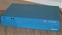

-
L'Indy
Introduction
L’Indy (nom de code « Guinness ») est une station de travail sortie officiellement en 1993 pour succéder à l’ Indigo. Conçu et commercialisé par Silicon Graphics, elle représentait pour la firme l’aboutissement de ses efforts pour s’imposer sur le marché de l‘édition, de la CAO ou plus simplement du multimédia, à une période où ces domaines étaient déjà dominés par Apple.
Vendue comme une station « bon marché », ses capacités techniques excellentes en graphisme 2D, ainsi que des équipements rares sur les stations de l‘époque, comme des entrées sorties numériques et analogiques ainsi qu’une entrée S-Vidéo, voir même inédits, comme une camera vidéo (la fameuse IndyCam) et un adaptateur ISDN permettant la vidéo conférence, ont construit sa réputation.
La machine se présente au format desktop (40.6 × 35.6 × 7.6 cm pour un poids de 7 Kg) et son joli boîtier couleur bleue pastel, robuste et bien conçu, peut supporter un écran CRT de bonne taille sans montrer le moindre signe de faiblesses.
Hardware
L’Indy supporte 4 types de processeurs MIPS 64 Bits, sur une carte mère IP24 intégrant 8 emplacements mémoires pouvant chacun supporter de 4 à 32 Mo de RAM ECC SIMM en 72 pins (soit un maximum de 256 Mo de RAM d’un type très courant).
Processeur Fréquence Cache L2 R4000PC 100 Mhz Non R4000SC 100 Mhz 1MB R4400SC 100 Mhz 1MB ^ 150 Mhz ^ ^ 175 Mhz ^ ^ 200 Mhz ^ R4600PC 100 Mhz Non ^ 133 Mhz ^ R4600SC 133 Mhz 512KB R5000PC 150 Mhz Non R5000SC 150 Mhz 512KB ^ 180 Mhz ^ Il existe seulement 3 types de cartes vidéo pour cette station, ce qui est peu comparé aux autres systèmes SGI, avec une carte d’entrée de gamme supportant une palette de couleur de 8 bits seulement.
Nom Caractéristiques Transformation HW Entry Couleurs 8 bits Non XL24 Couleurs 24bits Non XZ Couleurs 24bits Oui La station possède à l’origine seulement un disque dur au format SCSI 50 pins, ainsi qu’un lecteur de disquettes (un peu particulier) en interne.
Au niveau des autres périphériques principaux, elle supporte les claviers/souris au format PS/2, le standard PC actuel, et possède une interface réseau 10 Mo au format RJ45. Seule la sortie vidéo, au format 13W3 (en général), peut poser problème lors de l’achat aujourd’hui d’une telle machine, car elle nécessite soit un écran possédant une entrée 13W3 (si possible, un écran SGI, tant qu‘à faire), soit un adaptateur avec un écran compatible SOG (sync on green, voir ce site), ce qui n’est pas non plus très difficile à trouver.
Software
Comme tous les systèmes SGI de l‘époque, la station tourne sous IRIX, l’OS propriétaire d’SGI.
Commercialisée sous IRIX 5.1, cette station peut aujourd’hui profiter de la dernière version majeure d’IRIX, la 6.5, à condition d’avoir la chance de procéder l’une des dernières évolutions et de ne pas monter trop haut dans les versions mineures (la 6.5.22 semble fonctionner, une R5000 avec le maximum de RAM est conseillée).
Dans le cas contraire, IRIX 6.2 tourne très bien sur les Indy un peu plus faibles (dont la mienne fait partie).
Conclusion
Pour conclure, il s’agit d’une station de conception robuste disposant d’un hardware relativement performant, voire innovant (dans le contexte de l‘époque).
Un point suffisamment rare chez SGI pour être signalé, elle se distingue dans ses dernières versions (évolution de l’alimentation de marque Sony dans les plus récentes) par son silence, rompu uniquement par le bruit du disque dur.
Malgré une puissance qui ferait sourire certains, elle reste donc très agréable à utiliser et permet de profiter d’IRIX pour un prix d’achat dérisoire (on trouve de très bonnes Indy dans les 50-75 euro).
Pour plus d’informations, j’ai mis à disposition mes sources (toutes en anglais malheureusement).
Mon Indy
Je possède une Indy avec un processeur R4600SC 133MHz, 64 de Ram et une carte graphique Entry / XL8.

Ce n’est donc pas un bête de course (j’ai encore la moitié des emplacements de RAM à remplir), mais cela reste une configuration sympathique et très fluide sous IRIX 6.2.nezetic 1# hinv -v Iris Audio Processor: version A2 revision 4.1.0 1 133 MHZ IP22 Processor FPU: MIPS R4600 Floating Point Coprocessor Revision: 2.0 CPU: MIPS R4600 Processor Chip Revision: 2.0 On-board serial ports: 2 On-board bi-directional parallel port Data cache size: 16 Kbytes Instruction cache size: 16 Kbytes Secondary unified instruction/data cache size: 512 Kbytes on Processor 0 Main memory size: 64 Mbytes Vino video: unit 0, revision 0, IndyCam not connected Integral ISDN: Basic Rate Interface unit 0, revision 1.0 Integral Ethernet: ec0, version 1 Integral SCSI controller 0: Version WD33C93B, revision D Disk drive: unit 1 on SCSI controller 0 Graphics board: Indy 8-bitGuide de l’utilisateur pour l’Indy
Sources :
en.wikipedia.org/wiki/SGI_Indy
hardware.majix.org/computers/sgi.indy
sgistuff.g-lenerz.de/hardware/machines/indy.php
www.obsolyte.com/sgi_indypar Cédric TESSIER le 27/06/2006
{kind=link}